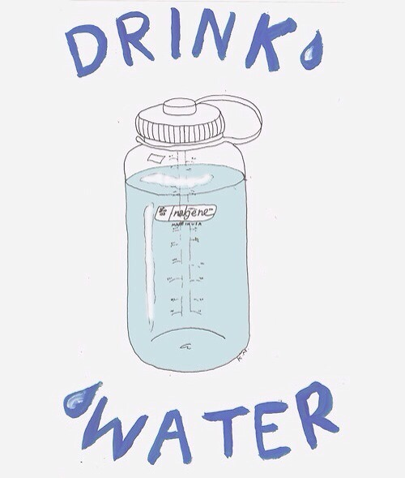

| Uống nước bao nhiêu là đủ | |
|---|---|
|
Trong điều kiện cơ thể bình thường, mỗi ngày bạn cần cung cấp 40ml nước cho mỗi kg cơ thể, trung bình là từ 1,5-2l nước uống mỗi ngày.70% trọng lượng cơ thể của chúng ta là nước, bởi vậy khi cơ thể thiếu nước, bạn sẽ thấy đau đầu, mệt mỏi, phản ứng chậm. |
 |